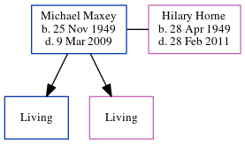

Michael John Maxey 1949 - 2009
[ Home ] | [ Calendar ] | [ Surnames Index ] | [ Errors ] | [ Family History ]Michael Maxey, the husband of Hilary Ann Horne (the cousin on the father's side of Nigel Horne), was born in North Shields, Northumberland, England on 25 Nov 19491,2 and. He married Hilary (with whom he had 2 surviving children Noel Peter and Sarah Louise) in Tynemouth, Tyne and Wear, England around Aug 19713 (Jul/Aug/Sep), which is also where he died on 9 Mar 20092.
Citations
- England & Wales, Birth Index: 1916-2005 Online publication - Provo, UT, USA: The Generations Network, Inc., 2008.Original data - General Register Office. England and Wales Civil Registration Indexes. London, England: General Register Office. © Crown copyright. Published by permission of the Cont
- England and Wales, Death Index, 2007-2013 Ancestry.com Operations, Inc.
- England & Wales, Marriage Index: 1916-2005 Online publication - Provo, UT, USA: The Generations Network, Inc., 2009.Original data - General Register Office. England and Wales Civil Registration Indexes. London, England: General Register Office. © Crown copyright. Published by permission of the Cont
Media
England & Wales births 1837-2006 - BMD/B/1949/4/AZ/000826/037
England & Wales marriages 1837-2008 - BMD/M/1971/3/AO/001436/093
Family Tree
Map
Generated by ged2site. Last updated on Jul 3, 2024